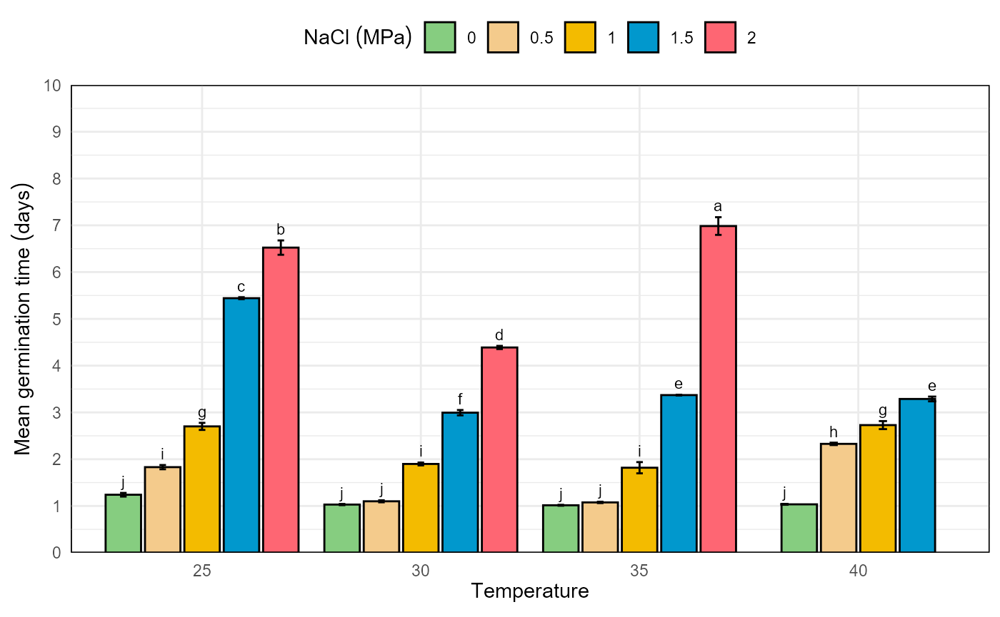

GerminaR package
Flavio Lozano-Isla, Omar Benites-Alfaro, Denise Garcia de Santana, Marli A. Ranal, Marcelo Francisco Pompelli
2020-09-03
Source:vignettes/GerminaR.Rmd
GerminaR.RmdThe package GerminaR has been developed to calculate different germination indices and graphical functions to analyze punctual and accumulative germination. For calculating the indices is necessary accumulative germination data. For more details, you can read the description of each index, the seed germination dataset and analysis in the germinar’s user manual. (GerminaQuant)
First we load the GerminaR package. It provides the prosopis dataset set that we will work throughout all the examples.
Data: GerminaR
The prosopis dataset contains information from an experiment containing information from germination experiment with Prosopis juliflor under different osmotic potentials and temperatures evaluated during 10 days.
Interactive shiny application
The functionGerminaQuant() activates an interactive application with friendly interface for performing the different germination, statistical and graphic analysis. For activation of some function could be necessary internet connection
Germination Variables
The function ger_summary(), according to the accumulative germination data, calculates several germination indices maintaining the values of each experimental unit and experiments factor for statistical analysis.
smr <- ger_summary(SeedN = "seeds" , evalName = "D" , data = dt ) knitr::kable(head(smr, 10),align = "c")
| rep | nacl | temp | seeds | grs | grp | mgt | mgr | gsp | unc | syn | vgt | sdg | cvg |
|---|---|---|---|---|---|---|---|---|---|---|---|---|---|
| 1 | 0 | 25 | 50 | 50 | 100 | 1.28 | 0.7812500 | 78.12500 | 0.9461447 | 0.6302041 | 0.3281633 | 0.5728554 | 44.75433 |
| 2 | 0 | 25 | 50 | 50 | 100 | 1.22 | 0.8196721 | 81.96721 | 0.8157272 | 0.6661224 | 0.2159184 | 0.4646702 | 38.08772 |
| 3 | 0 | 25 | 50 | 50 | 100 | 1.32 | 0.7575758 | 75.75758 | 0.9043815 | 0.5559184 | 0.2220408 | 0.4712121 | 35.69788 |
| 4 | 0 | 25 | 50 | 50 | 100 | 1.14 | 0.8771930 | 87.71930 | 0.5842388 | 0.7542857 | 0.1228571 | 0.3505098 | 30.74648 |
| 1 | 0 | 30 | 50 | 50 | 100 | 1.04 | 0.9615385 | 96.15385 | 0.2422922 | 0.9216327 | 0.0391837 | 0.1979487 | 19.03353 |
| 2 | 0 | 30 | 50 | 50 | 100 | 1.06 | 0.9433962 | 94.33962 | 0.3274449 | 0.8848980 | 0.0575510 | 0.2398979 | 22.63188 |
| 3 | 0 | 30 | 50 | 50 | 100 | 1.00 | 1.0000000 | 100.00000 | 0.0000000 | 1.0000000 | 0.0000000 | 0.0000000 | 0.00000 |
| 4 | 0 | 30 | 50 | 50 | 100 | 1.02 | 0.9803922 | 98.03922 | 0.1414405 | 0.9600000 | 0.0200000 | 0.1414214 | 13.86484 |
| 1 | 0.5 | 25 | 50 | 50 | 100 | 1.90 | 0.5263158 | 52.63158 | 1.0844751 | 0.5812245 | 0.3775510 | 0.6144518 | 32.33957 |
| 2 | 0.5 | 25 | 50 | 50 | 100 | 1.70 | 0.5882353 | 58.82353 | 1.1985488 | 0.4800000 | 0.3775510 | 0.6144518 | 36.14422 |
On the other hand, you can analyze each variable independently using the following germination indexes.
Mean Germination Time
## Mean Germination Time (MGT) # analysis of variance av <- aov(formula = mgt ~ nacl*temp + rep, data = smr) # mean comparison test mc_mgt <- ger_testcomp(aov = av , comp = c("temp", "nacl") , type = "snk") # data result mc_mgt$table %>% kable(caption = "Mean germination time comparison")
| temp | nacl | mgt | std | r | ste | min | max | sig |
|---|---|---|---|---|---|---|---|---|
| 25 | 0 | 1.240000 | 0.0783156 | 4 | 0.0391578 | 1.140000 | 1.320000 | j |
| 25 | 0.5 | 1.830000 | 0.0901850 | 4 | 0.0450925 | 1.700000 | 1.900000 | i |
| 25 | 1 | 2.701218 | 0.1512339 | 4 | 0.0756169 | 2.531915 | 2.897959 | g |
| 25 | 1.5 | 5.442365 | 0.0415525 | 4 | 0.0207763 | 5.382979 | 5.479167 | c |
| 25 | 2 | 6.523349 | 0.3068542 | 4 | 0.1534271 | 6.063830 | 6.695652 | b |
| 30 | 0 | 1.030000 | 0.0258199 | 4 | 0.0129099 | 1.000000 | 1.060000 | j |
| 30 | 0.5 | 1.100000 | 0.0432049 | 4 | 0.0216025 | 1.060000 | 1.160000 | j |
| 30 | 1 | 1.898129 | 0.0609184 | 4 | 0.0304592 | 1.833333 | 1.959184 | i |
| 30 | 1.5 | 2.994362 | 0.1138473 | 4 | 0.0569236 | 2.900000 | 3.160000 | f |
| 30 | 2 | 4.388259 | 0.0676715 | 4 | 0.0338357 | 4.326087 | 4.446809 | d |
| 35 | 0 | 1.015000 | 0.0191485 | 4 | 0.0095743 | 1.000000 | 1.040000 | j |
| 35 | 0.5 | 1.076250 | 0.0291905 | 4 | 0.0145952 | 1.060000 | 1.120000 | j |
| 35 | 1 | 1.817607 | 0.2398098 | 4 | 0.1199049 | 1.653061 | 2.173913 | i |
| 35 | 1.5 | 3.370480 | 0.0159689 | 4 | 0.0079844 | 3.354167 | 3.387755 | e |
| 35 | 2 | 6.984343 | 0.3784214 | 4 | 0.1892107 | 6.555556 | 7.400000 | a |
| 40 | 0 | 1.035000 | 0.0191485 | 4 | 0.0095743 | 1.020000 | 1.060000 | j |
| 40 | 0.5 | 2.327648 | 0.0512449 | 4 | 0.0256225 | 2.255319 | 2.375000 | h |
| 40 | 1 | 2.728780 | 0.1714562 | 4 | 0.0857281 | 2.520833 | 2.940000 | g |
| 40 | 1.5 | 3.287500 | 0.1012651 | 4 | 0.0506326 | 3.166667 | 3.400000 | e |
# bar graphics for mean germination time plot <- mc_mgt$table %>% fplot(data = . , type = "bar" , x = "temp" , y = "mgt" , groups = "nacl" , limits = c(0,9) , brakes = 1 , ylab = "Mean germination time (days)" , xlab = "Temperature (ºC)" , glab = "NaCl (MPa)" , legend = "top" , sig = "sig" , error = "ste" , color = T ) plot

In time analysis
fplot() is generic plot function optimized for publication graphs and you can add modification using ggplot2 package.
grt <- ger_intime(Factor = "nacl" , SeedN = "seeds" , evalName = "D" , method = "percentage" , data = dt) plot <- grt %>% fplot(data = . , type = "line" , x = "evaluation" , y = "mean" , groups = "nacl" , ylab = "Germination ('%')" , xlab = "days" , glab = "NaCl (mM)" , sig = NULL , color = T ) plot